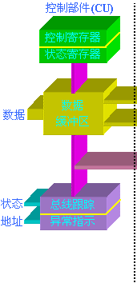
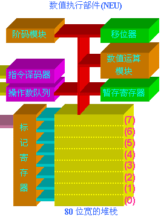

协处理器，顾名思义，是为与CPU协同工作而设计的，其主要用来提高进行数学和超越函数计算的速度。在80486DX和Pentium处理器中都内置一个与80387完全兼容的协处理器。CPU执行所有的常规指令，协处理器则执行协处理器指令，它们能同时并行地执行各自的指令。由于现在Pentium处理器内部结构的特点，该处理器能同时执行一条协处理器指令和二条整数指令。
协处理器80x87的内部结构如图11.4所示。它可分为二个主要部分：控制部件(CU)和数值执行部件(NEU)。
|   |
控制部件(CU)把协处理器接到CPU的系统总线上，协处理器和CPU都监视正在执行的指令流。如果当前将要执行的指令是协处理器指令(即：ESCape指令)，那么，协处理器会自动执行它，否则，该指令将交给CPU来执行。
数值执行部件(NEU)复制执行所有的协处理器指令，它有一个用8个80位的寄存器组成的堆栈，该堆栈用于以扩展精度的浮点数据格式来存放数学指令的操作数和运算结果。在协处理器指令的执行过程中，要么指定该堆栈寄存器中的数据，要么使用压栈/出栈机制来从栈顶存放或读取数据。
在NEU部件中，还有一些记录协处理器工作状态的寄存器，如：状态寄存器、控制寄存器、标记寄存器和异常指针寄存器等。有关这些寄存器的作用将在后面给予分别介绍。